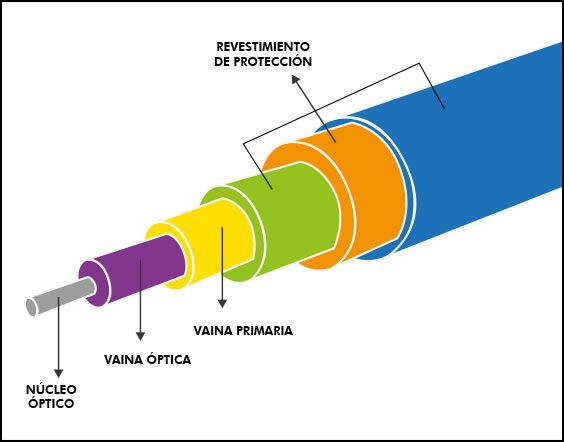
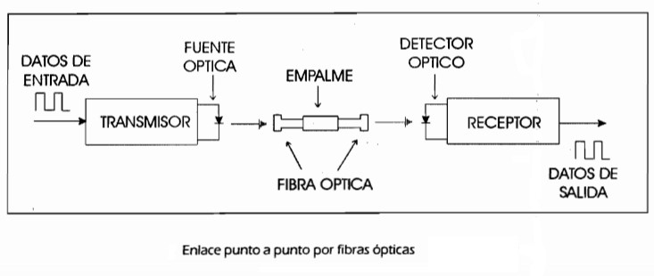
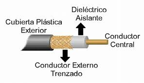
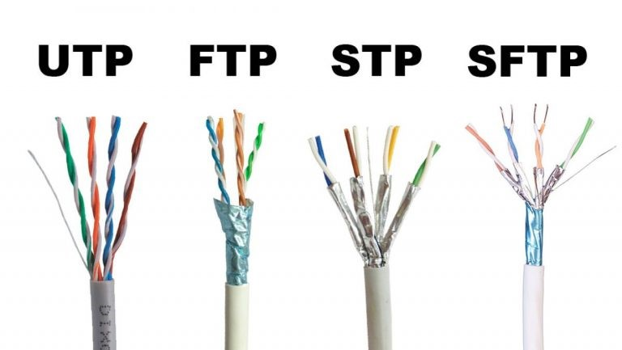
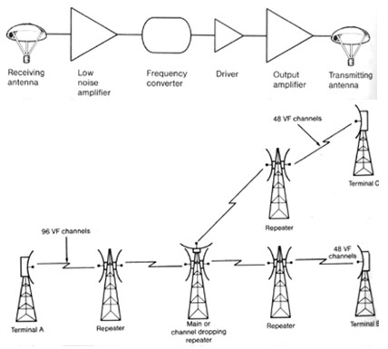
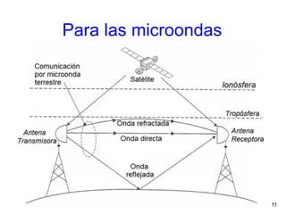
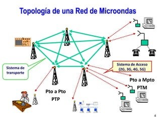
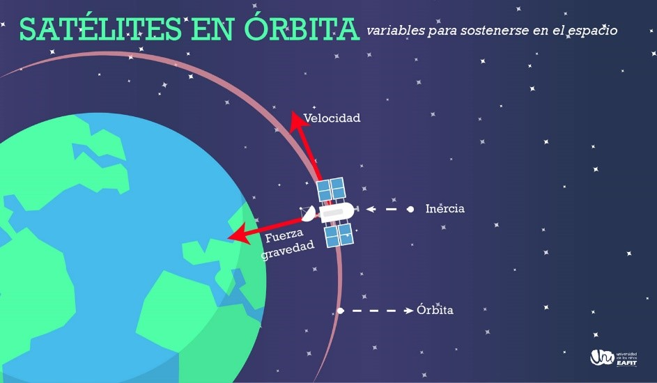

Introducción
En el vasto mundo de las telecomunicaciones, los medios de comunicación juegan un papel fundamental al permitir la transmisión de información, datos y mensajes entre distintos puntos geográficos y personas. Los medios de comunicación, también conocidos como canales de comunicación, son los vehículos a través de los cuales se lleva a cabo esta transferencia de información.
Desde los sistemas de comunicación más tradicionales hasta las tecnologías más avanzadas, los medios de comunicación han evolucionado significativamente a lo largo del tiempo para adaptarse a las necesidades cambiantes de la sociedad y la tecnología. Cada tipo de medio de comunicación posee sus propias características, ventajas y limitaciones, y su elección depende en gran medida del contexto específico en el que se utilice.
En esta exploración detallada de los tipos de medios de comunicación en las telecomunicaciones, examinaremos algunos de los medios más comunes, como los cables de fibra óptica, los cables coaxiales, las microondas y los satélites de comunicación. Profundizaremos en cómo funcionan, sus aplicaciones prácticas y los diversos aspectos éticos, ecológicos, históricos, políticos y económicos relacionados con su uso.
A través de esta investigación, esperamos proporcionar una comprensión más completa de la importancia y el impacto de los medios de comunicación en el mundo de las telecomunicaciones, así como promover una reflexión crítica sobre su papel en la sociedad moderna.
Tipos de Medios de Comunicación

Cables de Fibra Óptica
Los cables de fibra óptica son un medio de transmisión de datos que utiliza pulsos de luz para enviar información. Estos cables están compuestos por finas hebras de vidrio o plástico, llamadas fibras ópticas, que pueden transportar grandes cantidades de datos a velocidades extremadamente altas.
La luz viaja a través de las fibras ópticas por un fenómeno llamado reflexión interna total. La luz se refleja en las paredes internas de la fibra, rebotando de un lado a otro hasta llegar al destino. Este proceso permite que la luz viaje a largas distancias con una mínima pérdida de señal.
Estructura interna de un cable de fibra óptica.
Proceso de transmisión de datos por fibra óptica
Video explicativo
Reflexión
La interceptación de cables de fibra óptica para obtener datos sensibles es una preocupación importante, pero también la capacidad de la fibra óptica para transmitir grandes cantidades de datos facilita la vigilancia masiva. Se deben implementar medidas de seguridad sólidas para proteger la privacidad de las personas.
Cuestionamientos éticos
¿Cómo afecta la privacidad el uso de cables de fibra óptica para transmitir datos sensibles?
Privacidad:
- Interceptación: Los cables de fibra óptica son vulnerables a la interceptación, lo que permite que terceros accedan a datos sensibles sin autorización. Es importante implementar medidas de seguridad sólidas, como el cifrado de datos, para proteger la privacidad de las personas.
- Vigilancia masiva: La capacidad de la fibra óptica para transmitir grandes cantidades de datos facilita la vigilancia masiva por parte de gobiernos y empresas. Se necesita un debate público sobre el equilibrio entre la seguridad y la privacidad, y se deben establecer mecanismos de control para prevenir el abuso de esta tecnología.
Cuestionamientos ecológicos
¿Cuál es el impacto ambiental de la fabricación y despliegue de cables de fibra óptica?
Fabricación:
- Consumo de energía: La producción de cables de fibra óptica requiere una gran cantidad de energía, especialmente durante la extracción de materias primas y la fabricación de los componentes. Se deben implementar prácticas de fabricación sostenibles para minimizar el impacto ambiental.
- Recursos naturales: La fabricación de cables de fibra óptica utiliza recursos naturales como el silicio y el plástico. Es necesario utilizar estos recursos de manera responsable y explorar alternativas sostenibles.
Despliegue:
- Alteración del ecosistema: La instalación de cables de fibra óptica puede dañar hábitats naturales y fragmentar ecosistemas. Se deben realizar estudios de impacto ambiental y tomar medidas para minimizar la alteración del ecosistema.
- Residuos: El despliegue de cables de fibra óptica genera residuos, incluyendo cables viejos y materiales de excavación. Se deben implementar programas de reciclaje y reutilización para reducir el impacto ambiental.
Cuestionamientos históricos
¿Cuándo y cómo se desarrollaron los primeros cables de fibra óptica y cómo han evolucionado desde entonces?
- Desarrollo:
- Inicios: Los primeros cables de fibra óptica fueron desarrollados en la década de 1960 por investigadores como Narinder Singh Kapany y George Hockham.
- Evolución: La tecnología de fibra óptica ha experimentado un avance significativo desde sus inicios, con mejoras en la capacidad, velocidad y costo.
- Hitos importantes: Algunos hitos importantes en la historia de la fibra óptica incluyen la primera transmisión de datos a través de fibra óptica en 1966, el desarrollo de la fibra óptica monomodo en la década de 1980 y la instalación del primer cable submarino de fibra óptica transoceánico en 1988.
Cuestionamientos políticos
¿Qué regulaciones gubernamentales existen en torno a la instalación y uso de cables de fibra óptica en diferentes países?
- Regulaciones:
- Acceso: Las regulaciones gubernamentales pueden determinar quién tiene acceso a la infraestructura de fibra óptica y cómo se utiliza. Es importante que las regulaciones fomenten la competencia, protejan el interés público y promuevan el acceso universal a la banda ancha.
- Competencia: Las regulaciones antimonopolio pueden ser necesarias para evitar que una sola empresa controle la infraestructura de fibra óptica y limite la competencia.
- Protección del consumidor: Las regulaciones deben proteger a los consumidores de prácticas abusivas, como precios excesivos o servicios de baja calidad.
Cuestionamientos económicos
¿Cuáles son los costos asociados con la instalación y mantenimiento de una red de fibra óptica a gran escala?
Costos:
- Instalación: El costo de instalación de una red de fibra óptica a gran escala puede ser alto, debido a los materiales, la mano de obra y los permisos necesarios.
- Mantenimiento: El mantenimiento de una red de fibra óptica también requiere costos, como la reparación de cables dañados y la actualización de la tecnología.
Financiamiento:
- Inversión pública: Los gobiernos pueden invertir en la construcción de redes de fibra óptica para promover el desarrollo económico y social.
- Inversión privada: Las empresas privadas también pueden invertir en redes de fibra óptica, buscando obtener un retorno de la inversión.
- Modelos de financiación mixta: Se pueden utilizar modelos de financiación mixta que combinen inversión pública y privada para ampliar la cobertura de la fibra óptica.
Cables Coaxiales
Los cables coaxiales son un tipo de cable eléctrico que consta de dos conductores concéntricos: un conductor central de metal sólido o trenzado y una malla metálica que lo rodea, ambos aislados por una capa dieléctrica. Esta estructura permite que los cables coaxiales transmitan señales de alta frecuencia, como señales de televisión por cable, radiofrecuencia e internet de banda ancha.
Estructura de cable coaxial
Comparación de cables coaxiales
Ejemplos de Aplicación
- Televisión por cable: Los cables coaxiales se han utilizado tradicionalmente para transmitir señales de televisión por cable desde las estaciones emisoras hasta los hogares.
- Internet de banda ancha: Los cables coaxiales también se utilizan para proporcionar acceso a internet de banda ancha, especialmente en áreas donde la fibra óptica no está disponible.
- Radiofrecuencia: Los cables coaxiales se utilizan en una amplia gama de aplicaciones de radiofrecuencia, como antenas, radares y comunicaciones móviles.
- Otros: Los cables coaxiales también se utilizan en otras aplicaciones, como redes de datos locales, instrumentos de medición y sistemas de seguridad.
Cuestionamientos éticos
¿Cómo afecta la privacidad el uso de Cables Coaxiales para transmitir datos sensibles?
Privacidad y seguridad de la información:
- Vulnerabilidad a la interceptación: Los cables coaxiales pueden ser interceptados por terceros, lo que permite el acceso a datos sensibles sin autorización. Es crucial implementar medidas de seguridad sólidas, como el cifrado de datos, para proteger la privacidad de las personas.
- Vigilancia masiva: La capacidad de los cables coaxiales para transmitir datos facilita la vigilancia masiva por parte de gobiernos y empresas. Se necesita un debate público sobre el equilibrio entre la seguridad y la privacidad, y se deben establecer mecanismos de control para prevenir el abuso de esta tecnología.
Cuestionamientos ecológicos
¿Cuál es el impacto ambiental de la fabricación y despliegue de Cables Coaxiales?
Impacto ambiental de la fabricación y el despliegue:
- Consumo de energía: La producción de cables coaxiales requiere energía, especialmente durante la extracción de materias primas y la fabricación de los componentes. Se deben implementar prácticas de fabricación sostenibles para minimizar el impacto ambiental.
- Recursos naturales: La fabricación de cables coaxiales utiliza recursos naturales como el cobre y el plástico. Es necesario utilizar estos recursos de manera responsable y explorar alternativas sostenibles.
- Residuos: El despliegue de cables coaxiales genera residuos, incluyendo cables viejos y materiales de excavación. Se deben implementar programas de reciclaje y reutilización para reducir el impacto ambiental.
Cuestionamientos históricos
¿Cuándo y cómo se desarrollaron los primeros Cables Coaxiales y cómo han evolucionado desde entonces?
Evolución de la tecnología de cables coaxiales:
- Década de 1880: El primer cable coaxial fue patentado por John Logie Baird en la década de 1880.
- Década de 1920: Los cables coaxiales se desarrollaron y utilizaron ampliamente para la telefonía de larga distancia.
- Década de 1940: Se utilizaron para las primeras transmisiones de televisión por cable.
- Década de 1980: Se utilizaron para las primeras redes de internet de banda ancha.
Cuestionamientos políticos
¿Qué regulaciones gubernamentales existen en torno a la instalación y uso de Cables Coaxiales en diferentes países?
- Acceso: Las regulaciones gubernamentales pueden determinar quién tiene acceso a la infraestructura de cables coaxiales y cómo se utiliza. Es importante que las regulaciones fomenten la competencia, protejan el interés público y promuevan el acceso universal a las telecomunicaciones.
- Competencia: Las regulaciones antimonopolio pueden ser necesarias para evitar que una sola empresa controle la infraestructura de cables coaxiales y limite la competencia.
- Protección del consumidor: Las regulaciones deben proteger a los consumidores de prácticas abusivas, como precios excesivos o servicios de baja calidad.
Cuestionamientos económicos
¿Cuáles son los costos asociados con la instalación y mantenimiento de una red de Cables Coaxiales a gran escala?
Costos asociados a la instalación y mantenimiento de redes de cables coaxiales:
- Inversión inicial: El costo de instalación de una red de cables coaxiales a gran escala puede ser alto, debido a los materiales, la mano de obra y los permisos necesarios.
- Mantenimiento continuo: El mantenimiento de una red de cables coaxiales también requiere costos, como la reparación de cables dañados y la actualización de la tecnología.
- Competencia con la fibra óptica: La fibra óptica ofrece mayor capacidad y velocidad a un costo similar, lo que representa un desafío para los cables coaxiales.
Microondas
La comunicación por microondas es un enlace de comunicación que consta de tres componentes principales: transmisor, receptor y canal de aire. El transmisor modula la señal digital en la frecuencia utilizada para la transmisión, mientras que el canal de radio proporciona el camino abierto entre el transmisor y el receptor. El receptor recibe la señal transmitida y la convierte nuevamente al formato de señal digital.
El principal factor limitante para la transmisión de señales en enlaces de comunicación por microondas es la distancia que deben recorrer el transmisor y el receptor, y esta distancia debe estar libre de obstrucciones. Además, el camino entre el receptor y el transmisor debe tener una elevación mínima sobre cualquier obstáculo en el camino para evitar interferencias. Para lograr esto, se utilizan torres para ajustar las alturas.
 Diagramas que ilustren la transmisión de datos mediante microondas
Topología red microondas
Ejemplos de Uso
La principal aplicación de la comunicación por microondas terrestres es la transmisión a larga distancia, considerada como una alternativa al cable coaxial o a la fibra óptica.
Este sistema requiere menos amplificadores que el cable coaxial, pero necesita alineación de antena. Las microondas terrestres se utilizan principalmente para la televisión y la transmisión de voz.
Las líneas de comunicación por microondas se utilizan frecuentemente para conectar diferentes edificios donde el cableado es difícil o costoso. Sin embargo, debido a que suelen utilizar frecuencias autorizadas, las entidades otorgantes de licencias o los gobiernos imponen restricciones económicas y financieras adicionales.
Las principales aplicaciones de los sistemas de microondas terrestres incluyen:
- Teléfonos básicos (canales telefónicos)
- WiMAX
- Telégrafo/télex/fax
- Canal
- Cintas de vídeo
- Comunicación móvil (entre autobuses)
- Transmisión de televisión y voz
Las microondas terrestres continúan siendo un medio de comunicación muy eficaz en las redes urbanas que conectan bancos, mercados, grandes almacenes e instalaciones de radio móviles. Además, las comunicaciones por radio se pueden utilizar para ampliar la cobertura de Internet, como en lugares donde WiMAX no está disponible.
Video explicativo
Satélites de Comunicación
Los satélites de comunicación son dispositivos colocados en órbita alrededor de la Tierra que actúan como repetidores de señales. Funcionan recibiendo señales de radiofrecuencia desde la Tierra, amplificándolas y retransmitiéndolas a otra ubicación en la Tierra. Esto permite la comunicación entre dos o más puntos distantes en la superficie terrestre. Los satélites de comunicación están equipados con transpondedores que reciben, amplifican y transmiten señales de comunicación.
Órbita y la conexión con la Tierra
El Papel de los Satélites en las Telecomunicaciones
¿Cómo funcionan los satélites de telecomunicaciones?
Los satélites de comunicaciones son dispositivos en órbita alrededor de la Tierra que permiten la transmisión de señales de voz, video y datos a largas distancias. Aquí tienes una breve descripción de su funcionamiento:
- Recepción de señales: Las estaciones terrestres envían señales a los satélites. Estas señales pueden ser de radio, televisión, telefonía o datos.
- Amplificación y retransmisión: Los satélites reciben las señales y las amplifican. Luego, retransmiten las señales a otras estaciones terrestres en diferentes ubicaciones geográficas.
- Órbita geoestacionaria: La mayoría de los satélites de comunicaciones se encuentran en órbita geoestacionaria, a unos 35,900 kilómetros sobre el ecuador terrestre. En esta órbita, los satélites giran alrededor de la Tierra a la misma velocidad de rotación del planeta, lo que les permite permanecer fijos en relación con un punto en la superficie terrestre. Esto facilita la comunicación entre las estaciones terrestres.
Tipos de satélites de telecomunicaciones
Existen varios tipos de satélites de comunicaciones, cada uno diseñado para aplicaciones específicas. Algunos de los tipos más comunes incluyen:
- Satélites de transmisión directa: Utilizados para transmitir señales de televisión y radio directamente a los hogares.
- Satélites de comunicaciones móviles: Proporcionan servicios de telefonía móvil y datos.
- Satélites de navegación: Como el sistema GPS, que permite la navegación precisa en todo el mundo.
- Satélites de observación de la Tierra: Utilizados para monitorear el clima, el medio ambiente y otros aspectos terrestres desde el espacio.
Reflexión:
Los satélites de comunicación han revolucionado la forma en que nos comunicamos a nivel global al permitir la transmisión de datos, voz y video a largas distancias de manera eficiente. Sin embargo, su uso plantea desafíos éticos, ambientales, históricos, políticos y económicos que deben abordarse para garantizar un uso responsable y sostenible de esta tecnología.
Cuestionamientos Éticos
Cómo afecta la privacidad el uso de cables de fibra óptica para transmitir datos sensibles: Los cables de fibra óptica son altamente seguros y difíciles de interceptar, lo que hace que sean una opción preferida para transmitir datos sensibles. Sin embargo, la posibilidad de interceptación sigue existiendo, especialmente en puntos de acceso vulnerables. Esto plantea preocupaciones éticas sobre la privacidad de la información transmitida a través de estos cables y la necesidad de implementar medidas de seguridad robustas para protegerla.
Conclusiones
Resumen de Medios de Comunicación en Telecomunicaciones
Cables de fibra óptica:
- Alta capacidad de transmisión de datos.
- Menor susceptibilidad a interferencias electromagnéticas.
- Mayor seguridad y menor atenuación de la señal.
- Costos de instalación y mantenimiento relativamente altos.
- Ampliamente utilizados en redes de larga distancia y de alta velocidad.
Enlaces de microondas:
- Utilizan ondas de radio de alta frecuencia para la transmisión de datos.
- Adecuados para distancias de transmisión media a larga.
- Menor capacidad de transmisión de datos en comparación con las fibras ópticas.
- Mayor susceptibilidad a interferencias atmosféricas y obstrucciones.
- Costos de instalación y mantenimiento relativamente bajos en comparación con las fibras ópticas.
Regulaciones gubernamentales:
- Las regulaciones gubernamentales varían según el país y abordan aspectos como la seguridad, la privacidad, la competencia en el mercado y la protección del medio ambiente.
- En muchos países, la instalación y operación de cables de fibra óptica y enlaces de microondas están reguladas por agencias gubernamentales de telecomunicaciones.
Costos asociados:
Los costos asociados con la instalación y mantenimiento de una red de microondas incluyen equipos de transmisión, infraestructura de soporte, fibra óptica y cables de alimentación, personal técnico, costos de energía, licencias y permisos, y mantenimiento y actualizaciones.
En resumen, tanto los cables de fibra óptica como los enlaces de microondas son medios de comunicación importantes en las telecomunicaciones, cada uno con sus propias ventajas y desventajas en términos de capacidad de transmisión, seguridad, susceptibilidad a interferencias y costos asociados. La elección entre estos dos medios de comunicación depende de factores como la distancia de transmisión, la capacidad de la red, los requisitos de seguridad y los costos financieros.